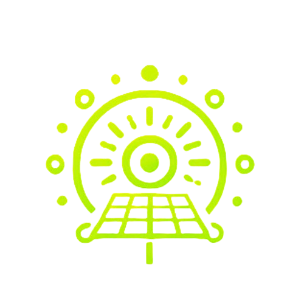

Освіта
**Запорізький електротехнічний коледж**
Навчаюся за спеціальністю, пов’язаною з електронікою та автоматизацією. Поглиблено вивчаю інформатику, фізику, електротехніку й системи керування. Самостійно розвиваю знання з програмування мікроконтролерів і побудови енергосистем.
Навички
- Розробка схем і прошивок для Arduino, ESP, Raspberry Pi
- Програмування на C/C++, Python
- Проєктування корпусів і деталей у 3D (Fusion 360, Tinkercad)
- 3D-друк (Creality Ender, матеріали PLA, PETG)
- Створення систем моніторингу та керування (датчики, реле, енергоконтроль)
- Робота з живленням, сонячними станціями, акумуляторами AGM/GEL
- Базові навички веб-інтерфейсів і локальних серверів
Досвід і проєкти
AirSunBoost
Система оптимізації використання сонячної енергії для живлення побутових пристроїв... (натисніть для деталей)
Прототипи корпусів і механічних вузлів
3D-моделі та надруковані деталі для електронних проєктів. (натисніть для деталей)